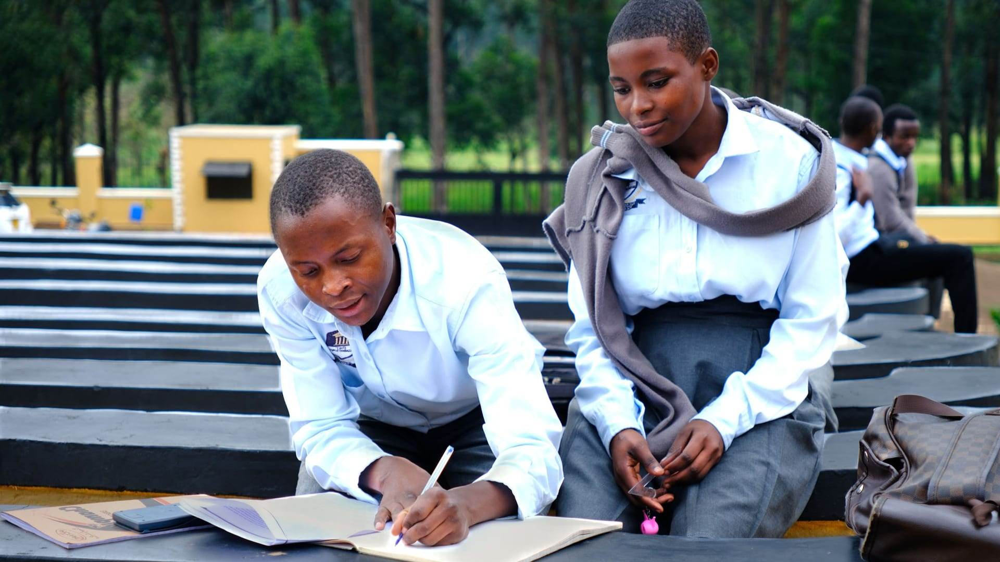

Grants programme project
P4T — Planning for Tomorrow
A community-led organisation creating pathways through education, skills training, health and wellbeing in Kyangwali.
Project overview
Community leadership at the centre
The Altenburg Foundation has supported P4T since 2018 through funding for its education work, including teacher salaries, a feeding programme for children, computer facilities, solar power, and books and learning materials.
The foundation also helped secure construction of the first phase of the secondary school and supported P4T in finding resources to complete and equip the rest of the school, alongside a dedicated vocational skills training centre.
The partnership supports P4T's wider mission to provide education, skills training, health and wellbeing services to its community.
Who the project serves
A community-led response in Kyangwali
Planning for Tomorrow is a community-led organisation based in Uganda, serving refugee communities in the Kyangwali settlement.
The community includes people displaced from DR Congo, South Sudan, Burundi, Rwanda, Kenya and Somalia. P4T's work is shaped by people who understand the settlement's needs from within.
Partnership in practice
What the partnership enables
Education delivery
Funding supports education work, including teacher salaries and a feeding programme for children.
Learning resources
Support includes books, learning materials and computer facilities for the school.
Power & digital access
Solar power and computer facilities help create more resilient conditions for learning.
School infrastructure
Support helped secure the first phase of secondary-school construction and resources to complete and equip the school.
Vocational skills
The partnership also supports a dedicated vocational skills training centre.
Partner organisation
Work led close to the community
Learn more about Planning for Tomorrow and its wider work.
Visit Planning for Tomorrow websitePhoto gallery
Education and vocational training in Kyangwali
01 / 05
Get involved
Support community-led opportunity
Support can help community-led partners sustain education, practical skills and resilient local opportunity. Contact the foundation to discuss giving, fundraising or collaboration.